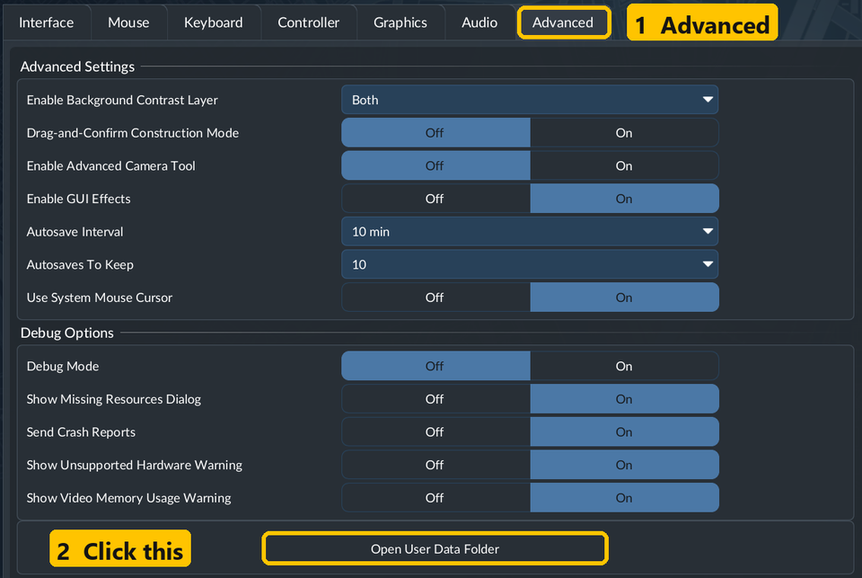

Four PYT updates are waiting in mod.io’s approval queue — some for over a week. PC players don’t have to wait: install them by hand here. As soon as mod.io approves one, switch back to the normal subscription.
Get-FileHash .\file.zip — the two must match.The whole mod — it isn’t live on mod.io at all yet. The game’s Auto-Rename button, plus a whole lot more: design your own line names by clicking pieces, let new lines name themselves in your style, number every vehicle after its line. Nothing changes until you say so. Plus the Mod Bar fix (see Blueprint Exchange).
Download A+ 1.0.3 SHA-256 98FEA2CC8489D4A9999056347AABBEFFBA23669E45AA212F98EFD71E9BF4648AEverything from 1.3, which never cleared the queue — players on mod.io still have 1.2.2: an honest paste preview (amber = it fits, red only when something is really in the way), Undo takes back just the paste, signalled track included, Move keeps an industry’s stock, one-step Delete, the keys work straight after Copy. Plus two crash fixes (thanks PHENlCUS): with Mod Bar, opening Blueprint Exchange from the PYT bar could freeze and close the game; with Better Switches, Select / Cut / Paste could close it.
Download Blueprint Exchange 1.3.2 SHA-256 6C4467A70880B01245978C723A508D55061DB68483D519C42A353566682D8716Plays nice with Mod Bar: with Mod Bar installed, a click in the PYT bar could freeze the game and close it — fixed. The PYT button can also fade until your mouse is over it (PYT - Settings). Plus the PlayStation fix waiting on mod.io. Otherwise it plays like the live 3.0.
Download Pay Your Tolls 3.0.2 SHA-256 F93D23A04671CE04355026A5786D812459E451E9DF6296E0991A5156ECF3E31EPlays nice with Mod Bar: the same fix for Drones’ PYT row, and the fade. Plus the PlayStation fix waiting on mod.io. Otherwise it plays like the live 1.1.2.
Download Drone 1.1.4 SHA-256 5DBAF53BA5EB56BDFD33B4C07508DD58F3A3B066CFFEBA33C020A72223C960CDDrop the zip you downloaded here (or pick it). Your browser works out its fingerprint on your own PC — nothing is uploaded — and tells you whether it’s byte for byte the file we scanned. Then see that file’s live virus scan by about 70 antivirus engines on VirusTotal.
epod_blueprint_exchange_tf3_1) — it goes straight into mods.C:\Program Files (x86)\Steam\userdata\<your Steam number>\3493540\local\mods\.)

Delete that folder from local\mods and subscribe on mod.io again — from then on updates arrive by themselves. Your saves carry on as before.
Something not working? Leave a comment on the mod’s mod.io page — we read them all.